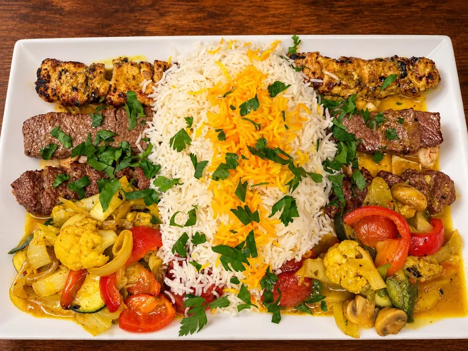
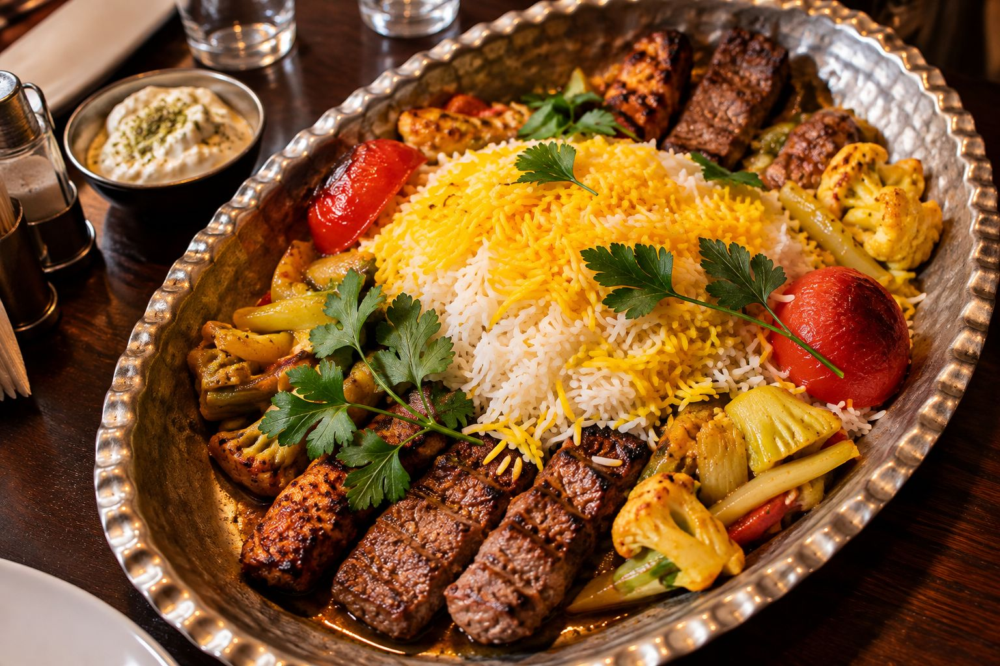
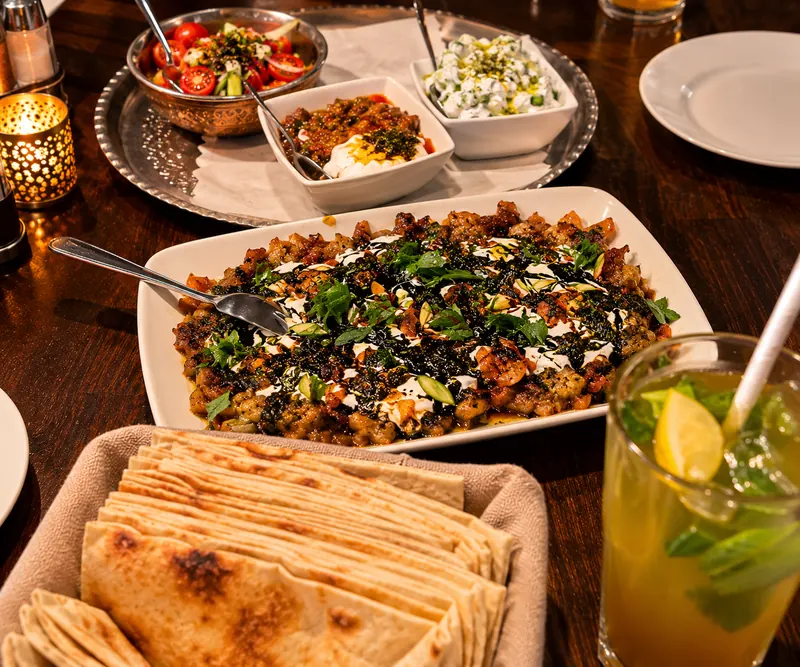
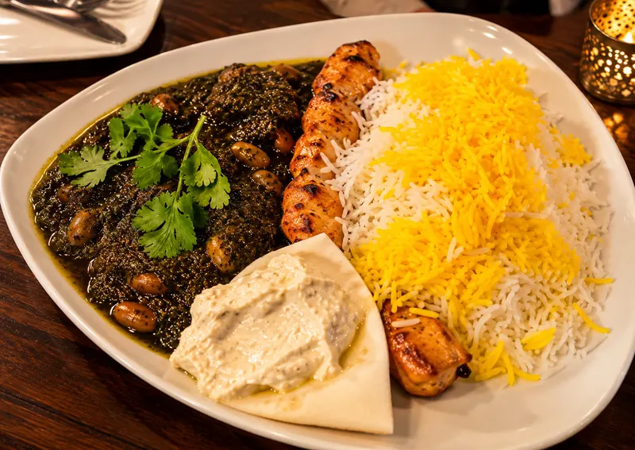
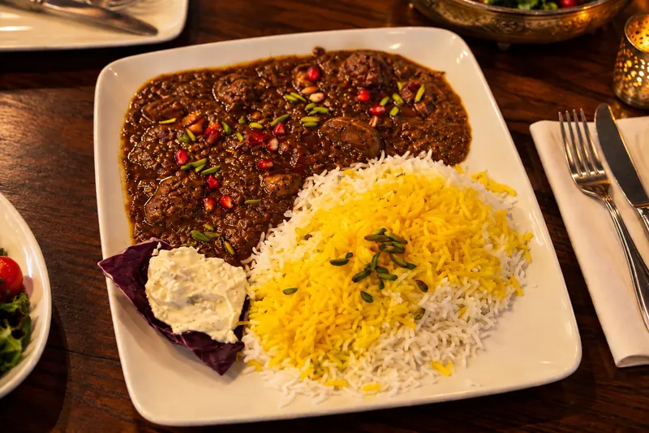
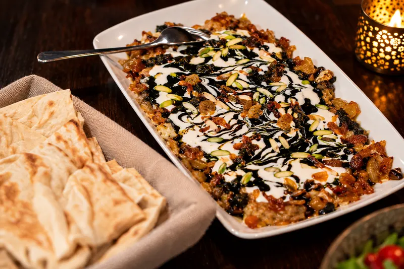

Persische Grillgerichte
Große Grillplatte
Hähnchenspieß in Safranmarinade, Lammspieß und Hackspieß vom Kalb und Lamm – mit Safranreis, Grilltomaten, Grillgemüse und Musir-Dip. Für zwei Personen.

Persische Küche · Stuttgart-West
Duftender Safranreis, Spieße frisch vom Grill und langsam geschmorte Khoresht – mitten in Stuttgart, in der Schloßstraße 57A.
Di – Fr ab 17 Uhr · Sa & So ab 14 Uhr · Mo Ruhetag
Über uns
Die persische Küche lebt von Geduld und feinen Aromen: Safran, frische Kräuter, Granatapfel, Walnüsse und Berberitzen. Bei SAFRAN finden Sie diese Vielfalt auf dem Teller – von saftigen Kebab-Spießen bis zu traditionell geschmorten Khoresht mit lockerem Safranreis.
Ob für ein Abendessen zu zweit mit unserer Grillplatte oder für eine Runde mit Freunden und vielen kleinen Vorspeisen zum Teilen: Bei uns ist der Tisch gedeckt.
Hier ist Raum für die persönliche Geschichte des Restaurants und seines Teams (z. B. Gründung, Herkunft der Rezepte, Philosophie).

Speisen & Spezialitäten
Eine Auswahl der Gerichte, für die sich der Weg in die Schloßstraße lohnt.

Persische Grillgerichte
Hähnchenspieß in Safranmarinade, Lammspieß und Hackspieß vom Kalb und Lamm – mit Safranreis, Grilltomaten, Grillgemüse und Musir-Dip. Für zwei Personen.

Kebab-Spezialitäten
Ghormesabsi oder Gheymeh – kombiniert nach Wahl mit Hack-, Hähnchen- oder Lammspieß, dazu Safranreis und Musir-Dip.

Safranreis & Khoresht
Gemahlene Walnüsse in Granatapfelsirup-Sauce – vegetarisch mit Champignons oder mit Hähnchenspieß, immer mit Safranreis.

Traditionelle Spezialitäten
Auberginen mit gebratenen Zwiebeln, persischen Pistazien und Schafskäse-Sauce, getoppt mit Pfefferminz-Öl. Dazu Fladenbrot – ab zwei Personen.
Bildergalerie
Standort & Kontakt
| Montag | Ruhetag |
|---|---|
| Dienstag | 17:00 – 22:00 |
| Mittwoch | 17:00 – 22:00 |
| Donnerstag | 17:00 – 22:00 |
| Freitag | 17:00 – 22:00 |
| Samstag | 14:00 – 22:00 |
| Sonntag | 14:00 – 22:00 |
An Feiertagen können die Zeiten abweichen.